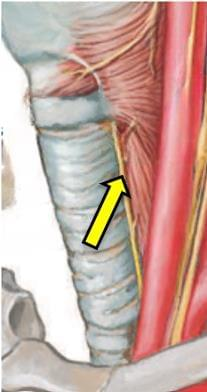

A resposta está no nervo da seta. Olhe a imagem antes das alternativas.

Imagem da questão originalO acesso anterior à coluna cervical pelo lado esquerdo diminui o risco de lesão do nervo indicado, o
Comente a sua letra e arraste para a resposta.
Ele sobe no sulco traqueoesofágico, colado à traqueia, como na imagem da questão, e inerva a laringe. O que muda de um lado para o outro é onde ele faz a curva.
Sem exagero: essa é a regra anatômica clássica que a prova cobra. Estudos comparando os lados mostram taxas de lesão semelhantes, e muitos cirurgiões escolhem o lado por preferência.
Nervo no sulco traqueoesofágico, protegido pelo acesso à esquerda = laríngeo recorrente.
A lesão ou a tração do laríngeo recorrente causa disfonia, em geral transitória. Três cuidados que vêm da mesma anatomia:
Qual nervo, apontado na imagem da prova, o acesso pela esquerda protege?
Lesão causa rouquidão, em geral transitória. Reoperação pelo outro lado: laringoscopia antes.